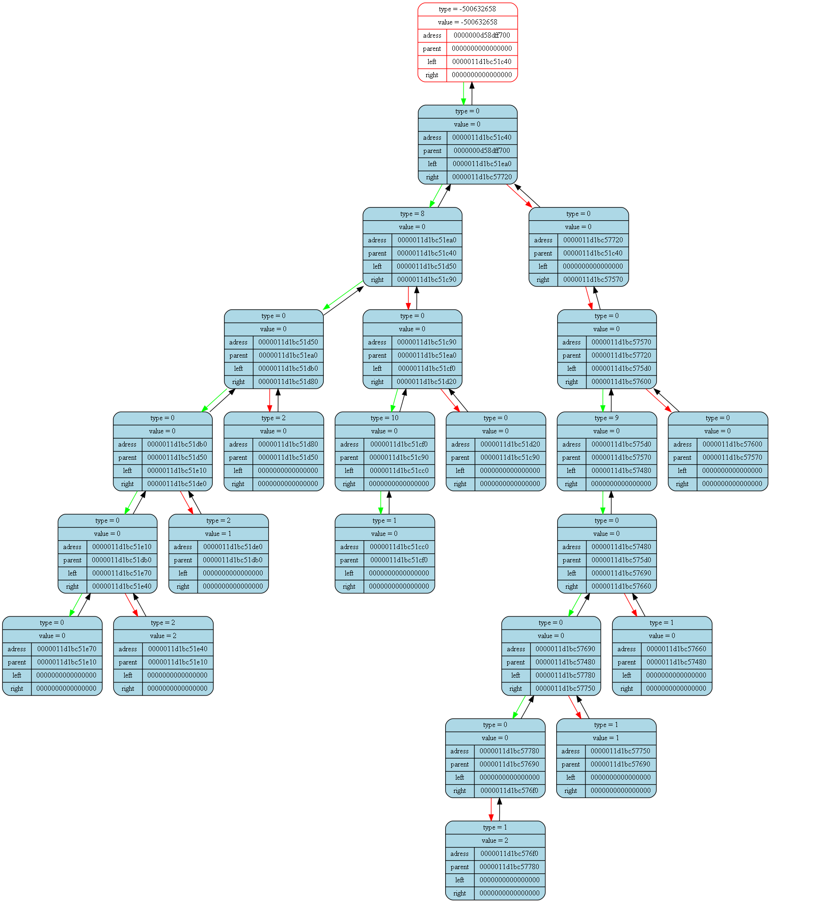

<pre>
<pre>

Tree dump from (int main()) at (frontmain.cpp) at line (17):
tree [0000000d58dff6d0] "&(prog -> tree)" at (int ProgCtor(Prog_t*)) at (front.cpp)(31):
{
	status   = 1
	error    = 0
	size     = 23

	(((((((TYPE = 0; VAL = 0)TYPE = 0; VAL = 0(TYPE = 2; VAL = 2))TYPE = 0; VAL = 0(TYPE = 2; VAL = 1))TYPE = 0; VAL = 0(TYPE = 2; VAL = 0))TYPE = 8; VAL = 0(((TYPE = 1; VAL = 0)TYPE = 10; VAL = 0)TYPE = 0; VAL = 0(TYPE = 0; VAL = 0)))TYPE = 0; VAL = 0(TYPE = 0; VAL = 0(((((TYPE = 0; VAL = 0(TYPE = 1; VAL = 2))TYPE = 0; VAL = 0(TYPE = 1; VAL = 1))TYPE = 0; VAL = 0(TYPE = 1; VAL = 0))TYPE = 9; VAL = 0)TYPE = 0; VAL = 0(TYPE = 0; VAL = 0))))TYPE = -500632658; VAL = -500632658)
}
